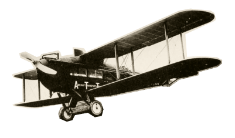

Строительство железнодорожной магистрали Москва-Васюки
ЧТОБЫ ПОДДЕРЖАТЬ
МЕЖДУНАРОДНЫЙ ВАСЮКИНСКИЙ
ТУРНИР
 ПОСЕТИТЕ ЛЕКЦИЮ НА ТЕМУ:
«ПЛОДОТВОРНАЯ ДЕБЮТНАЯ ИДЕЯ»
ПОСЕТИТЕ ЛЕКЦИЮ НА ТЕМУ:
«ПЛОДОТВОРНАЯ ДЕБЮТНАЯ ИДЕЯ»

И СЕАНС ОДНОВРЕМЕННОЙ ИГРЫ В ШАХМАТЫ НА 160 ДОСКАХ ГРОССМЕЙСТЕРА О. БЕНДЕРА
| Место проведения: | Клуб «Картонажник» |
| Дата и время мероприятия: | 22 июня 1927 г. в 18:00 |
| Стоимость входных билетов: | 20 коп. |
| Плата за игру: | 50 коп. |
| Взнос на телеграммы: |
ЭТАПЫ ПРЕОБРАЖЕНИЯВАСЮКОВБудущие источники
обогащения васюкинцев
обогащения васюкинцев
Открытие фешенебельной гостиницы «Проходная пешка» и других небоскрёбов
Поднятие сельского хозяйства в радиусе
на тысячу километров: производство овощей, фруктов,
икры, шоколадных конфет
Строительство дворца
для турнира
Размещение гаражей
для гостевого
автотранспорта
Постройка сверхмощной радиостанции для передачи всему миру сенсационных результатов
Создание аэропорта «Большие Васюки»
с регулярным отправлением почтовых
самолётов и
дирижаблей
во все концы
света, включая Лос-Анжелос и Мельбурн
